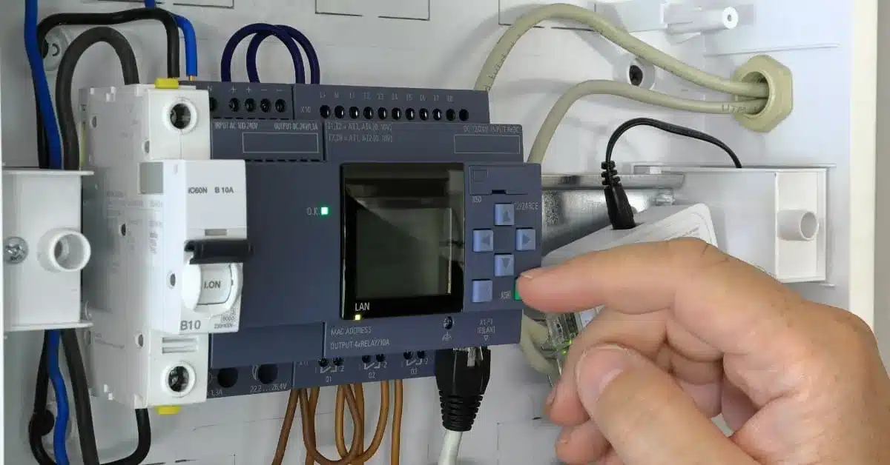

¿Cómo funciona un PLC?
Un PLC funciona como un cerebro electrónico que recibe señales de entrada desde sensores, botones o interruptores. Estas señales son procesadas internamente por el PLC de acuerdo con un programa cargado por el usuario.
Después de procesar la información, el PLC envía señales de salida que activan dispositivos como motores, luces, alarmas o válvulas.
